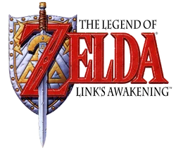
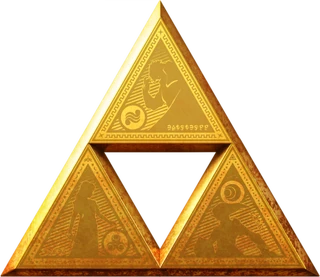

- introduction
- Début de la chronologie
- Branche de Link enfant
- Branche de Link adulte
- Branche du héro déchu
- Breath of the wild et Tears of the kingdom
Branche du héro déchu
Et oui! Il existe un univers ou le joueur d'ocarina of time avait la flemme de battre ganondorf et a juste abandonné sa partie. Dans cette timeline, link perd contre ganondorf, amenant le chaos total à Hyrule.
Dans A Link to the Past, Link se réveille dans son lit, chez sa tante, dans le royaume d'Hyrule. Un rêve mystérieux lui révèle que la princesse Zelda est en danger. En s'aventurant à travers le château, Link découvre que la princesse a été capturée par le sorcier maléfique Agahnim, qui a pris le contrôle du château d'Hyrule. Link se lance alors dans une quête pour sauver Zelda. Il doit collecter trois pierres spirituelles en explorant divers donjons et en affrontant des créatures. Après avoir rassemblé les pierres, il accède à l'Épée de légende, l'Épée Master, pour combattre Agahnim. Une fois vaincu, Link apprend l'existence du Royaume des Ombres, où il doit poursuivre sa quête pour affronter Ganon, le véritable mal. En naviguant entre le Royaume de la Lumière et le Royaume des Ombres, Link résout des énigmes, vainc des ennemis et récupère des objets magiques pour renforcer ses capacités. Le jeu culmine avec la confrontation épique entre Link et Ganon, où Link doit utiliser tout ce qu'il a appris pour restaurer la paix à Hyrule.
Dans Oracle of Seasons, Link se rend à Holodrum pour retrouver la princesse Zelda, qui a été enlevée par le sorcier Onox. En arrivant, Link découvre que les saisons sont déséquilibrées à cause d'Onox, qui a volé le Joyau de la Saison, une gemme magique qui contrôle les saisons. Link doit voyager à travers Holodrum, résoudre des énigmes dans des donjons, et utiliser les pouvoirs de la Terre pour restaurer l'équilibre des saisons. En battant Onox, Link libère la déesse de la saison, et la paix revient à Holodrum.
Dans Oracle of Ages, Link est transporté à Labrynna, où il doit sauver la déesse Nayru, enlevée par le sorcier Veran. Nayru a le pouvoir de voyager dans le temps, et Veran utilise ce pouvoir pour semer le chaos. Link doit voyager entre le passé et le présent, résoudre des énigmes et utiliser les instruments du temps pour avancer dans l'histoire. En affrontant Veran dans son château, Link parvient à libérer Nayru et à restaurer l'équilibre à Labrynna.
Connexion entre les jeux
Les deux jeux peuvent être joués séparément, mais ils offrent une expérience complémentaire. En terminant l'un des jeux, il est possible d'importer la sauvegarde dans l'autre jeu, ce qui permet de débloquer des éléments supplémentaires et de découvrir une histoire enrichie. Ensemble, Oracle of Seasons et Oracle of Ages forment une aventure captivante qui explore les thèmes du changement, du temps, et de la lutte contre le mal.
Dans Link's Awakening, nous jouons lemême link que dans oracle of age et oracle of season. Il se retrouve naufragé sur l'île de Koholint après une tempête. À son réveil, il découvre que la seule façon de quitter l'île est de réveiller le Poisson-Rêve, un être mystique qui contrôle le destin de l'île. Pour ce faire, Link doit collecter les huit instruments de la musique qui lui permettront de réveiller le Poisson-Rêve. Au cours de son aventure, Link explore divers donjons, résout des énigmes et combat des ennemis tout en interagissant avec les habitants de l'île, qui sont souvent inspirés par d'autres jeux de la série Zelda. Au fil de son voyage, Link découvre que Koholint est un monde de rêves et que son existence est liée aux souvenirs et aux désirs des personnes qui y vivent. Il doit naviguer à travers des thèmes de rêve et de réalité tout en affrontant le cauchemar qui menace l'île. Le jeu culmine lorsque Link réussit à rassembler tous les instruments et à réveiller le Poisson-Rêve, ce qui lui permet de comprendre la nature de l'île et son propre rôle dans cette aventure. L'Ile ainsi qu ses habitants disparurent tandis que link continua son chemin.
Dans A Link Between Worlds, l'histoire se déroule dans le royaume d'Hyrule, qui est maintenant lié au royaume parallèle de Lorule. Link, le protagoniste, vit une vie tranquille en tant que serrurier. Cependant, un événement mystérieux survient lorsque le sorcier Ravio apparaît et lui demande de l'aide. Ravio révèle que la princesse Hilda de Lorule a besoin de l'aide de Link pour sauver son royaume, qui est en proie à la destruction à cause du maléfique Yuga, qui transforme les habitants de Lorule en peintures. Yuga a également volé la Triforce de Lorule, mettant en péril l'équilibre entre les deux mondes. Pour sauver Hyrule et Lorule, Link doit explorer les deux royaumes, résoudre des énigmes dans des donjons et acquérir de nouveaux pouvoirs, notamment la capacité de se transformer en peinture sur les murs, ce qui lui permet de naviguer à travers le monde d'une manière unique. Link doit affronter Yuga et ses sbires tout en récupérant des objets légendaires, dont l'Épée Master. Le jeu culmine dans une bataille épique où Link doit affronter Yuga, sauvant ainsi Lorule et rétablissant l'équilibre entre les deux royaumes.
Bon après, il y aThe Legend of Zelda Triforce Heroes, The legend of Zelda (le premier) et The Adventure of link mais bon on s'en fiche un peu d'eux...